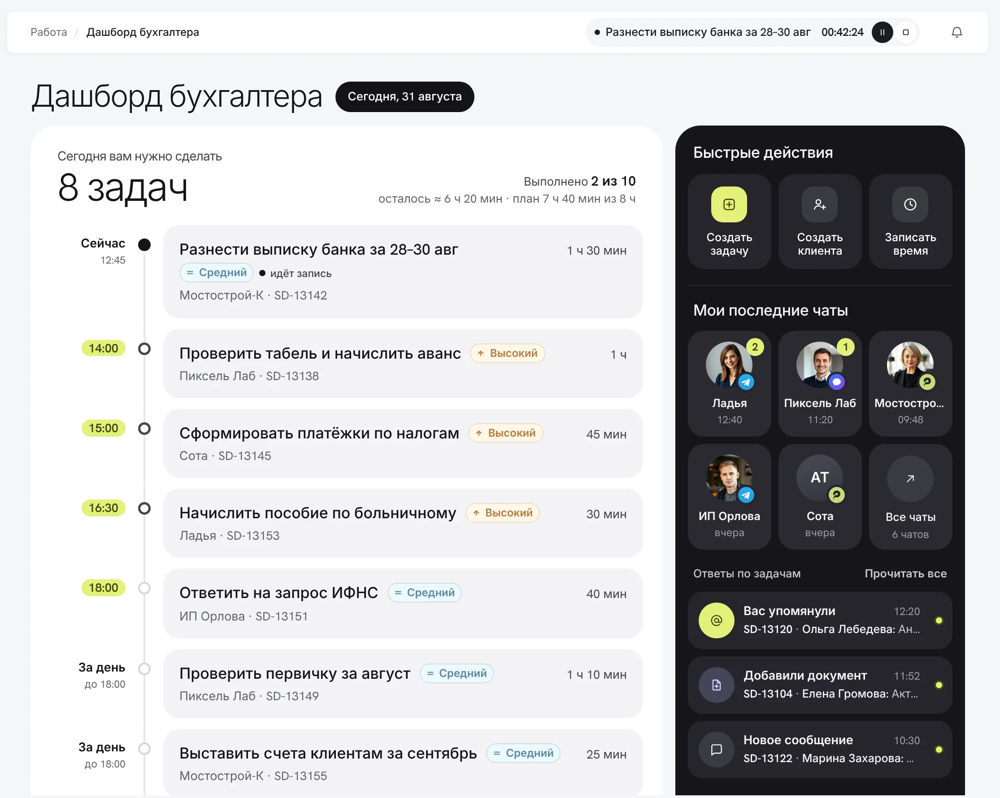
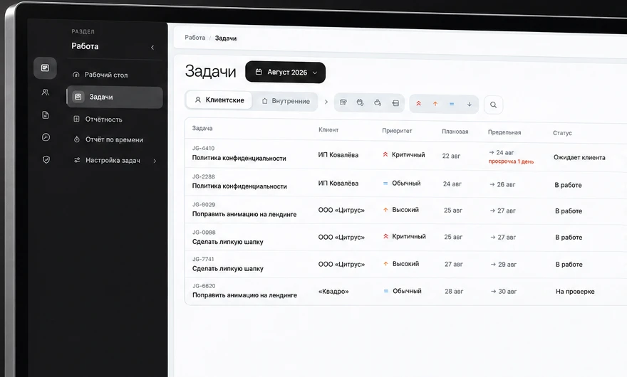
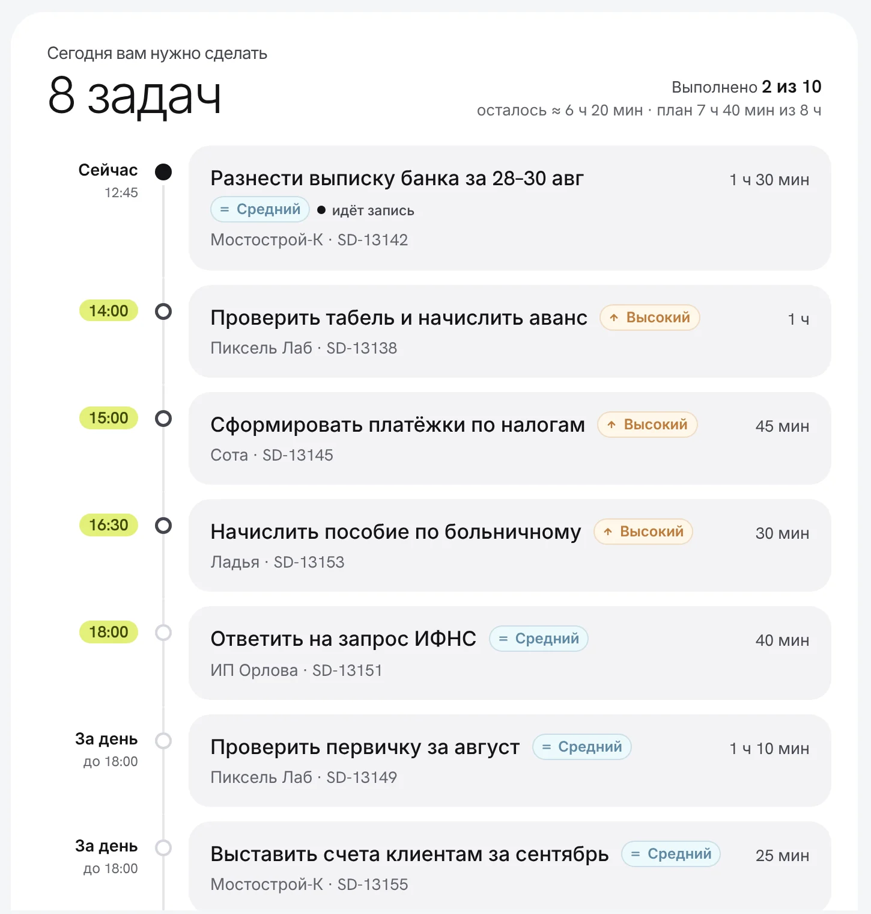
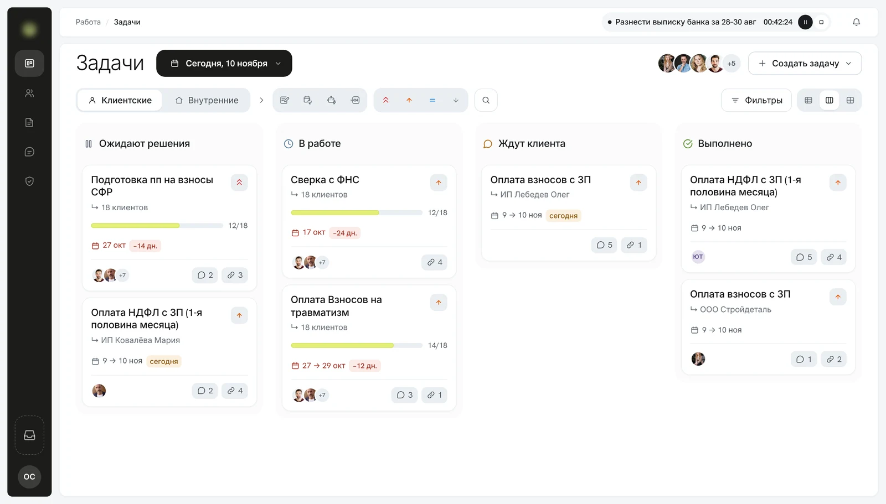
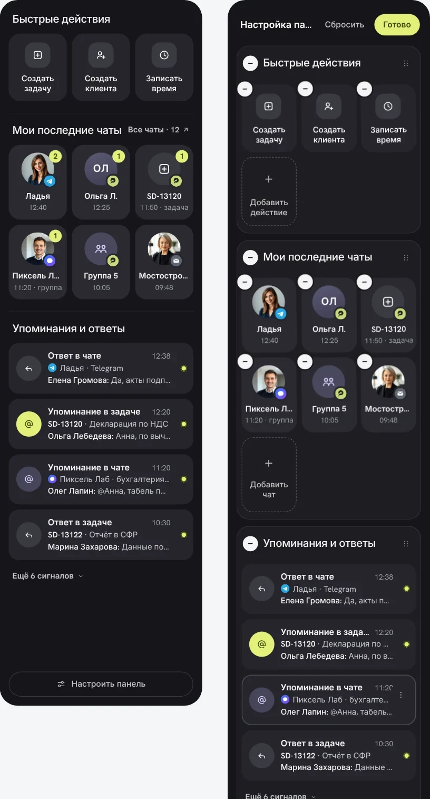

Рабочий стол бухгалтера
Читать кейс ↓
Сколько задач на сегодняБыстрые действияЧаты с клиентамиУпоминания и ответы- Сколько задач на сегодня
- Быстрые действия
- Чаты с клиентами
- Упоминания и ответы
13 → 1 — экспертный разбор интерфейса до и после, не замер. Метрик после запуска пока нет.
Коротко
- Продукт
- B2B SaaS для бухгалтерских компаний: задачи, отчётность, клиенты, чаты, биллинг
- Моя роль
- Product Designer: исследование, архитектура, дашборды, прототипы, проверка с пользователями
- Статус
- Реализовано, используется сотрудниками
Контекст
Платформа для бухгалтерских компаний. Сервис быстро рос, а удобство для бухгалтеров отставало.
Три роли с разной ежедневной работой:
Ведёт задачи клиентов и общается с ними в чатах.
Следит за просрочками, рисками и загрузкой.
Сопровождает клиентов компании.
Проблема
Все роли работали в одной огромной таблице задач. Фильтры проблему не решали.
Задачи, отчётность, КСО и требования лежали в разных разделах, хотя это одна работа. Бухгалтер не понимал, с какой задачи начать, руководителю не хватало общей картины.
Итог — когнитивная нагрузка: время уходило на то, чтобы приступить к работе.

У каждой строки свой чат, а бухгалтер сам искал ответы на вопросы:
Исследование
Спрашивала не о желаемых функциях, а о том, как люди работают и на чём принимают решения.
Анализ сервиса
разделы и связи между ними
Интервью
бухгалтеры, руководители, менеджеры
Опрос по JTBD
для каждой роли
Персоны
по реальным людям
CJM «до» и «после»
проверена на тестировании
Карточная сортировка
новая навигация


Что показало исследование
Сроки, просрочки и то, что можно отложить.
Бухгалтеры постоянно переключаются между задачами и чатами.
Бухгалтеру — дела на день, руководителю — контроль, менеджеру — сопровождение клиентов.
Общие период и тип задач легли в основу области «Работа».
Как искала решение
Собрала схему архитектуры под работу каждой роли, затем схему процесса: на каждый шаг — референсы (Zendesk, Front, Intercom, Битрикс24) или своё решение.
Дальше — про бухгалтера: для него я спроектировала новый флоу.
Ключевые решения
Четыре решения для бухгалтера: единая область «Работа», рабочий стол, канбан задач и настраиваемый пульт.
Единая область «Работа»
Связанные процессы жили в разных разделах.
Одна область с общим периодом и типом задач, разделы внутри.
Общие параметры задаются один раз.

Разделы «Работы» в одном менюОбщий период- Разделы «Работы» в одном меню
- Общий период
Рабочий стол бухгалтера
Непонятно, с чего начать день.
Рабочий стол отвечает: что делать сейчас, что упущено, кто написал и где ответить.
Приоритеты видны без просмотра всей очереди.

Канбан задач
Не было картины задач и статусов.
Канбан как часть рабочего стола. На карточке: приоритет, сроки, просрочка, новые документы и сообщения.
Одна работа на много клиентов — одна карточка со счётчиком.

Клиентские и внутренниеСовокупная задача: 12 из 18 клиентовПросрочка в дняхНовые сообщения и документы- Клиентские и внутренние
- Совокупная задача: 12 из 18 клиентов
- Просрочка в днях
- Новые сообщения и документы
Настраиваемый рабочий пульт
Постоянные переключения между задачами и чатами.
Панель с быстрыми действиями, чатами и уведомлениями; набор настраивает сам пользователь.
Один компонент для бухгалтера и менеджера.

Проверка
Показывала решения пользователям и давала кликабельные прототипы.
Нужно закреплять избранные чаты.
Добавила закрепление в настройки пульта.
Результат
От общей таблицы — к рабочим пространствам под сценарии ролей. Область «Работа», рабочий стол, канбан и пульт в работе у сотрудников, новый формат оценили положительно.
13 → 1 и 4 → 0 — экспертный разбор по интерфейсу до и после. Дальше эффект меряем по времени до начала работы, доле просрочек и обращениям в поддержку.
Что это дало бизнесу
Локальную задачу про чек-лист превратила в новую архитектуру раздела. Её согласовали директор и клиенты, раздел внедрён и работает.
Один компонент пульта закрывает две роли: команда развивает одно рабочее место, а не два.
Сроки и просрочки видны заранее. Для бухгалтерской компании штраф клиента — это деньги и доверие.
Время уходит на работу, а не на поиск задач. Это основа, чтобы расти без пропорционального найма.